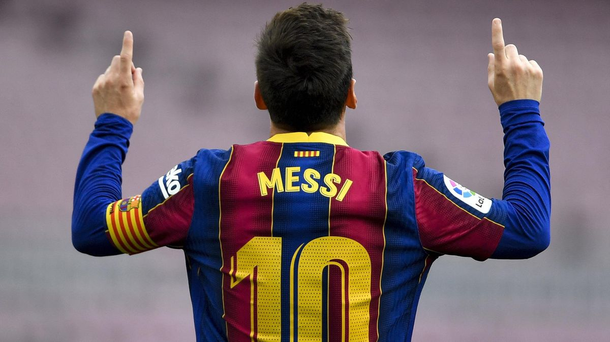

Bienvenido a MESSIUM
El museo virtual más grande del más grande:
LIONEL MESSI

Futbolista argentino. Poseedor de una habilidad técnica excepcional, una endiablada velocidad y una inventiva inagotable, desde que llegó de la mano de sus padres al F.C. Barcelona, con 13 años de edad, realizó una carrera vertiginosa por las diferentes categorías hasta el primer equipo, en el que debutó con apenas 16 años en un partido amistoso ante el Oporto. En 2004, con 17 años, Leo Messi jugó su primer encuentro oficial de la Liga española. Con 18 años le llegó su consagración internacional: formó parte de la selección argentina, campeona en el Mundial Juvenil Sub-20 de Holanda, disputado en 2005. El resto es historia...

El lugar de nacimiento del GOAT es Rosario, Santa Fe, Argentina. Más precisamente: